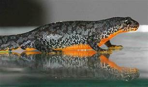

Triturus es un género de anfibios caudados de la familia Salamandridae, compuesto por una serie de especies de Europa y Asia que se encuentran en cuerpos de agua, como estanques poco profundos, lagunas, arroyos y aguas profundas tranquilas; y terrestres, como páramos, pantanos y bosques. Este género se ha usado como especie indicadora debido a que su presencia o ausencia puede indicar la salud del ambiente, por ejemplo el pH del agua y otros contaminantes. Es considerado por la IUCN como una especie de preocupación menor; sin embargo, las poblaciones de las distintas especies han ido decreciendo y en otras se encuentran estables